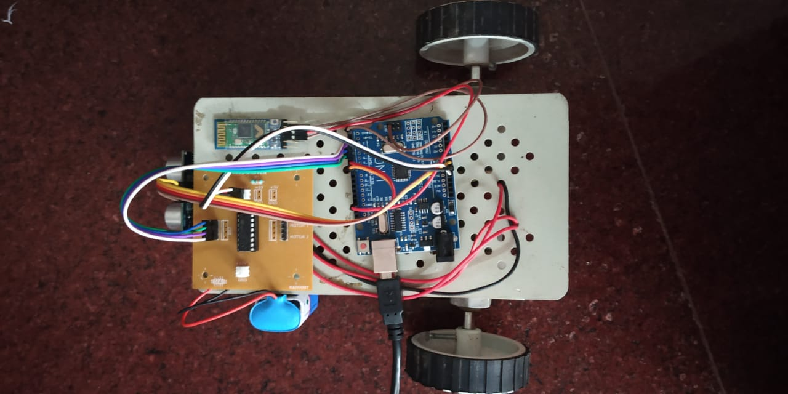

Sarath Krishna K
my PortfolioI am a technical enthusiast fostering my abilities in frontend development. I studied Electronics and communication engineering in School of Engineering CUSAT.Have good knowledge about electronics. Acquired programming and web development skills through self study and online resources. Good knowledge in programming languages including HTML5,CSS3,PYTHON,JavaScript. Also familiar with git and github
Me
EDUCATION
| timeline | institution | marks |
|---|---|---|
| 2017-21 | School Of Engineering , Cusat Electronics and communication Engineering | 65% |
| 2015-2017 | Sreekrishnapuram Higher secondary school plus two | 90% |
| 2015 | Sreekrishnapuram central school Highschool | 92% |
Projects
Final year project-EYE DIRECTIVE WHEEL CHAIR:
The eye directive wheel chair is a mobility-aided device for persons with moderate physical
disabilities or chronic diseases as well as for the elder people.Most wheelchairs are controlled by joysticks which require users to operate with hands flexibly.
This project designs an electric wheelchair controlled by eye movements. We use image processing using PYTHON OpenCV to detect movement of the eye, the
wheelchair motor will be directed to move left, right, forward or to stop by using Arduino Uno.
In addition to this, for the safety purpose an ultrasonic sensor is mounted in front of the
wheelchair to detect the obstacles and it automatically stops the wheel chair.
prototype
Third year project-FARMLAND SECURITY SYSTEM:
Intelligent security system for farm protection is an embedded system for
protecting farm from wild animals by sensing their presence using a PIR sensor.
This system detects every intrusion and displays a message that intrusion is detected on the 16x2 LCD display.
An alarm is also made for some time on every intrusion. A buzzer is used as the alarm.
Other projects
OpenCV project to check similarity of two images created in google colab for practicing image processing.Check this link for code
Simple counter: First page created using JavaScript .A simple counter with save and reset options. Check out this link
first portfolio webpage created using HTML & CSS alone.(better view in desktop)
Programming Languages
- HTML
- CSS
- JavaScript (basic)
- Python
- C++
General skills & strengths
- Verbel & written communication
- Adaptability
- Problem solving skill
- Time management
- Punctuality
- Self motivated
Weakness
- Lack of experience
- Overthinking
Interests
- New Technologies
- Reading
- Cricket
- Movies
- Current affairs